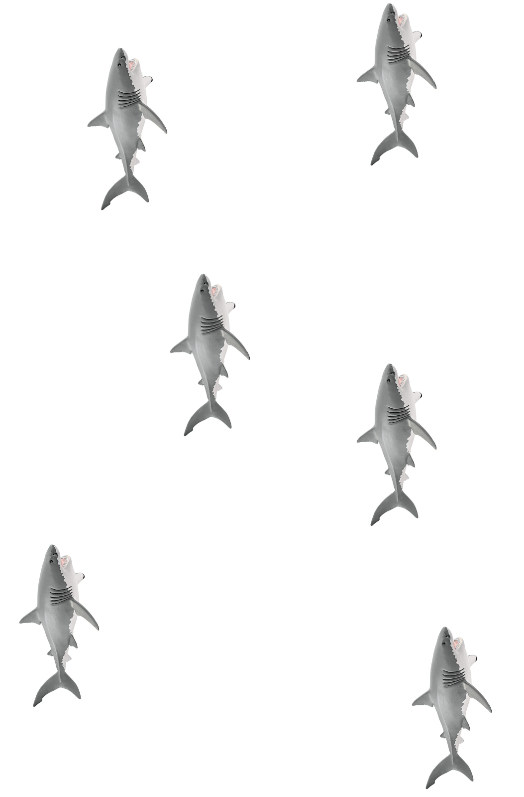

{% extends "base.html" %}
{% block page_name %}Introduction to the interaction
{% endblock %}

{% block page_block1 %}

{% endblock %}

{% block page_block2 %}
    <form action="{{ url_for('handle_forms') }}" method="post">
        <p>
            <input type="hidden" name="answer" value="23">
        </p>
        <p>
            <button id="button" type="submit" class="btn btn-light nextButton" style="float: left;">
            </button>
        </p>
    </form>
{% endblock %}


{% block script %}

<script>

let subheading = document.getElementById('description_text');
subheading.style.width = "600px";
let button = document.getElementById('button');

let language = '{{ language }}';
    console.log("LANGUAGE" + language);

    var subcontent = "";
    var buttonText = "";

    switch (language){
        case "en":
            console.log("LANGUAGE IS ENGLISH HIHI");
            subcontent = "I can help you!<br><br>Although I can’t physically move the toy, I can use the picture you took in the beginning and create new images from it.<br><br>In machine learning this is called<br><span style='color:#FFD951'>Data Augmentation</span>."
            buttonText = "Next";
            break; 
        case "de":
            console.log("LANGUAGE IS GERMAN HIHI");
            headcontent = "Hey, ich bin YVES!"
            subcontent = "Manche Computer Systeme können mit machine learning objekte erkennen, <br> blabliblu"
            buttonText = "Weiter";
            break;
        case "rus":
            console.log("LANGUAGE IS RUSSIAN HIHI");
            headcontent = "russian"
            subcontent = "russian"
            buttonText = "russian";
            break;
        case "pol":
            console.log("LANGUAGE IS POLISH HIHI");
            headcontent = "polish"
            subcontent = "Mogę ci pomóc!!<br><br>Chociaż nie mogę fizycznie przenieść zabawkę, mogę użyć zdjęcia, które zrobiłeś na początku i stworzyć z niego nowe obrazy.<br><br>W uczeniu maszynowym nazywa się to <span style='color:#FFD951'>augmentacją danych</span> (ang. Data Augmentation)."
            buttonText = "Następny";
            break;
    }

    subheading.innerHTML = subcontent;
    button.innerHTML = buttonText;

</script>

{% endblock %}
